第22天：生成代码段和数据段
第22天：生成代码段和数据段
上一节我们讲了如何把中间指令翻译成汇编代码，这一节我们解决以下问题：
1、如何生成数据段
2、如何生成字符串表（包含在数据段中）
3、如何生成代码段
什么是section
简单说，section 是 NASM 汇编器中的段（section）声明指令，用于定义程序中不同类型的段，如代码段、数据段、未初始化数据段等。
问题来了，程序为什么要分段，混成一疙瘩可以吗？
混成一疙瘩也不是不行，但是会带来很多麻烦。
根据局部性原理，CPU 倾向于将代码和数据分别存储在不同的指令缓存 (I-Cache) 和数据缓存 (D-Cache) 中。将它们分段存放，可以显著提高缓存的命中率，从而加快处理速度。如果混成一疙瘩，如何区分代码和数据呢？
通过分段，操作系统可以为不同的内存区域设置不同的访问权限：
- 代码段 (Code/Text Segment)：通常设为只读和可执行。这能防止程序在运行时意外或被恶意地修改自身的指令。
- 数据段 (Data Segment)：设为可读写但不可执行（NX/DEP 技术）。这可以防止缓冲区溢出攻击，避免黑客通过在变量（数据）中注入恶意代码并诱导 CPU 执行。
要是混成一疙瘩，还怎么分别管理呢？
还有，.bss 段（Block Started by Symbol）
- 存放未初始化或零初始化的全局/静态变量
- 在可执行文件中不占空间（只记录大小）
- 加载时由操作系统分配并清零
下表列出了一些典型的段
| 段名 | 全称 / 含义 | 内容 | 内存属性 | 是否占磁盘 | 典型用途 |
|---|---|---|---|---|---|
.text |
Text / Code | CPU 指令（机器码） | R-X（只读 + 可执行） | 是 | 函数代码 |
.rodata |
Read-Only Data | 只读数据（字符串常量、const 全局变量） |
R—（只读） | 是 | "Hello"; const int x = 5; |
.data |
Initialized Data | 已初始化的全局/静态变量 | RW-（可读写） | 是 | int a = 10; char buf[] = "abc"; |
.bss |
Block Started by Symbol | 未初始化或零初始化的全局/静态变量 | RW-（可读写） | 否（只记录大小） | int b; static char big[1000]; |
按理说，字符串应该在 .rodata 段，未初始化或零初始化的全局变量应该在 .bss 段，但是我们为了降低难度，把这二者都放到 .data 段。
带来的影响有2个
1、字符串可以修改
2、对磁盘的占用变大
不过这两点不影响我们学习编译原理。
所以，我们只生成 2 个段，.data 段和 .text 段；前者用来放全局变量和字符串表，后者用来放函数的代码。
生成 .text 段
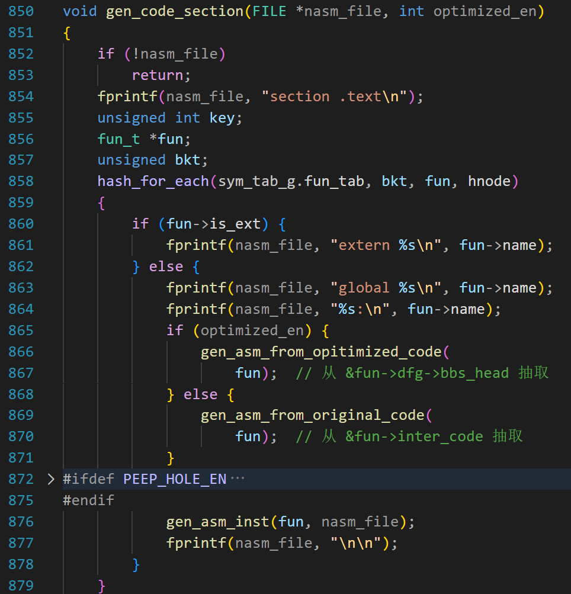
第一个参数是文件指针，第二个参数是否开启优化。优化指我们前面学习的常量传播、复习传播、活跃变量分析、懒惰代码移动这四种优化。
第 854 行，输出 “section .text”，说明下面的内容是 .text 段；
第 858~864 行，遍历哈希表中的所有节点，如果是 extern 声明的函数，不需要输出代码（也没有代码），输出 extern xxx 就可以了
如果是已经定义的函数，第 863 行，输出“global xxx”
用 global 声明函数是因为默认情况下，我们在 NASM 中定义的标签是 局部符号（local symbol）。局部符号 只能在当前 .asm 文件内部使用。
但是 c 语言中的函数天生就是对其他文件可见的（除非用 static 修饰，但是我们不支持这个特性）
所以要用 global 声明，这样其他文件的代码就可以调用我们的函数了。
底层原理（链接视角）
每个
.o文件有一个 符号表（symbol table）默认符号是 LOCAL（仅本文件可见）
global将符号标记为 GLOBAL / EXTERN（外部可见）链接器在合并多个
.o时，靠这个信息解析跨文件引用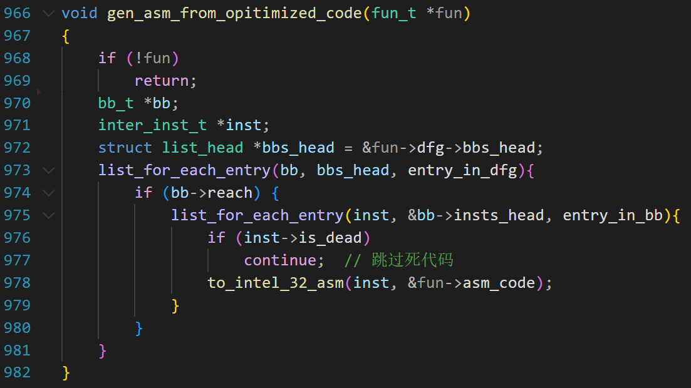
第 865~871 是从 fun->dfg->bbs_head 抽取中间代码，忽略不可达的块和标记为 dead 的指令。
第 869 是从 fun->inter_code 中抽取中间代码，fun->inter_code 这个链表上的代码是没有经过优化的中间代码。
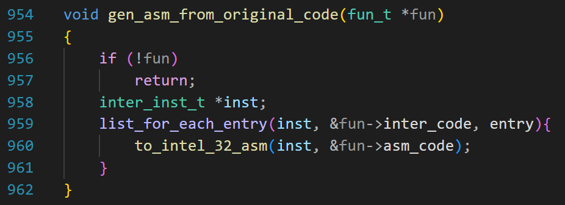
它们都是调用 to_intel_32_asm 完成翻译，翻译出来的汇编指令在 fun->asm_code 链表中。
上面第 876 行，调用 gen_asm_inst 函数把fun->asm_code 链表中的汇编指令写入文件。
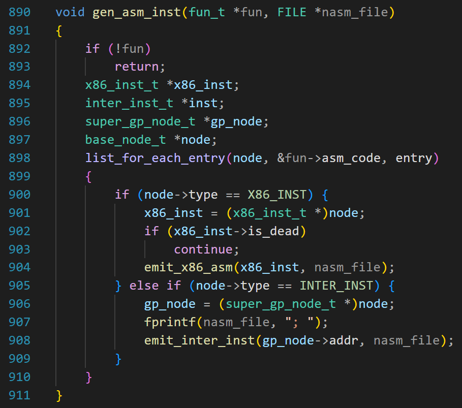
注意，fun->asm_code 这个链表上有两种数据类型，一个是汇编指令，一个是中间指令。
第 904 行，把汇编指令写入文件。
第 902~903 目的是跳过无效的汇编，这是窥孔优化的内容，后面会讲，现在不用管。
第 907 行，写“;” 到文件，汇编代码注释用“;”，相当于 c 的 “//”
第 908 行，把中间代码作为注释写入文件。
全局变量的初始化
在讨论如何生成 .data 段之前，我们必须复习一下全局变量的初始化。
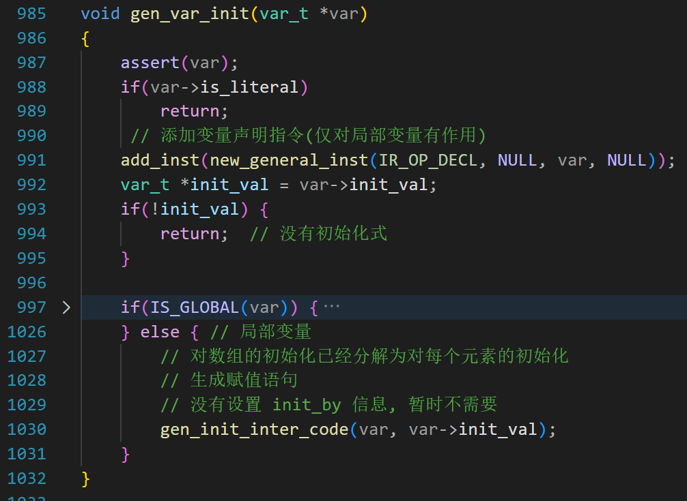
在语法分析的时候，对于定义的变量，都已经加入了符号表。在加入符号表之后，还会调用 gen_var_init 函数。
第 988 行，如果是常量，就返回。
第 991 行，如果是局部变量，添加形如 “decl xxx” 的中间指令。
第 992 行，如果变量没有初始化值，则返回。
否则，根据是否为全局变量做不同的处理。
第 1030 行，对于局部变量，生成赋值语句。
有人问为啥全局变量没有赋值语句，这是因为全局变量的初始化不是靠指令，而是靠汇编文件中的 .data 段。
对于全局变量，要分情况讨论。
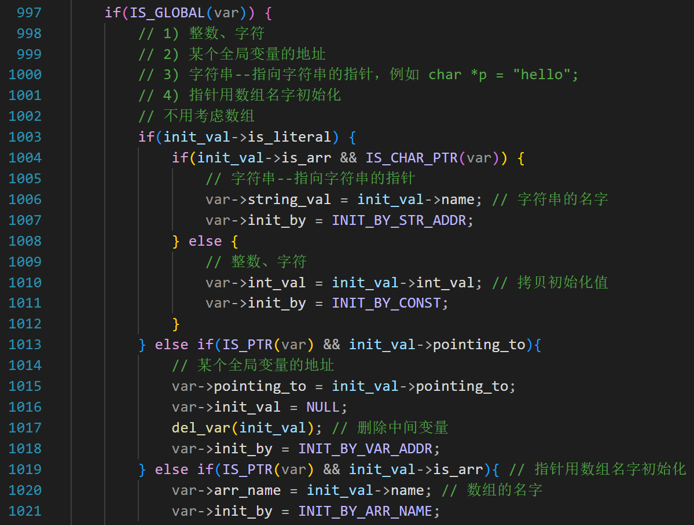
第 998~1001 已经写了注释，初始化值分为几类：
1、常量；例如：
1 | |
第 1010 行，把常量的值拷贝到变量的 int_val 字段
并且设置 var->init_by = INIT_BY_CONST;
第 1004 行，如果变量是 char * 类型且初始化值是数组，说明如上面第 3 行的代码，设置 var->string_val 为字符串的名字；
并且设置 var->init_by = INIT_BY_STR_ADDR;
2、某个全局变量的地址
3、全局数组的名字
这两种情况例如：
1 | |
在生成中间代码的时候， &monkey 会创建一个新的变量，假设叫 tmp，并且让 tmp->pointing_to 指向变量 monkey
然后把 p_monkey 的 init_val 设置为 tmp
所以代码第 1015 行，var->pointing_to = init_val->pointing_to;
其实就是设置 p_monkey 的 pointing_to 字段为变量 monkey
这样变量 tmp 就没有用了，它就是一个搭桥的，第 1017 行删除变量 tmp，“过河拆桥”。
第 1018 行设置 var->init_by = INIT_BY_VAR_ADDR; 意思是用变量的地址初始化
第 1019 行，针对 “int *dog = arr;” 这种情况，设置 var->arr_name 为数组的名字，并且设置 var->init_by = INIT_BY_ARR_NAME;
对于全局数组的初始化，在 gen_arr_init 函数中
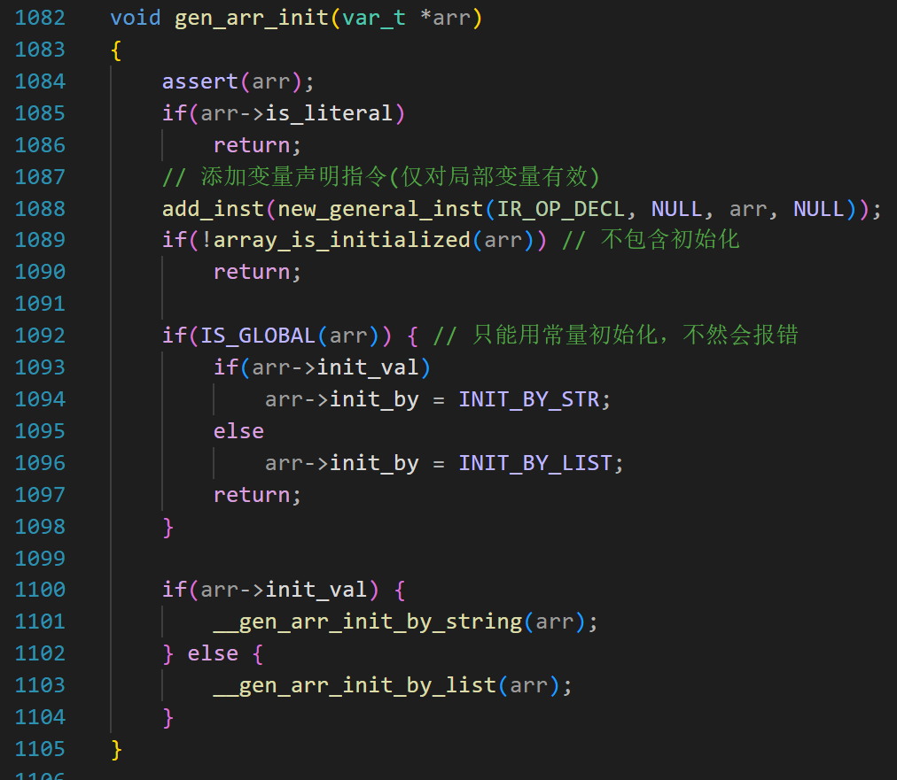
此函数和 gen_var_init 类似，在把数组加入符号表后，就会调用它。
第 1088 行，添加形如 “decl xxx” 的中间指令。
第 1089 行，判断数组有没有初始化，如果没有初始化，就返回。
我们要关注的是第 1093 到 1096 行。用列表初始化和用字符串初始化有什么区别呢？举个简单的例子你就明白了：
1 | |
当 gen_var_init 和 gen_arr_init 函数中为全局变量设置好初始化类型后，再看数据段的生成，就会简单很多。
生成 .data 段
数据段里面有字符串表和全局变量。全局变量分为数组和普通变量。
先来一个直观的认识。请看下面的代码：
1 | |
上面的代码对应的汇编代码不唯一，我们的编译器会生成这样的代码：
1 | |
因为是全局变量，名字前面用 global 修饰，例如第 3、7、10 行。
然后要换行，为变量指定初始值。
需要注意的是第 11 行，p_monkey 是一个指针，它的值是变量 monkey 的地址，在汇编代码中，全局变量的名字就是它的地址，所以写“dd monkey”
db 和 dd 是 数据定义伪指令（data definition directives），用于在程序的数据段中分配并初始化内存。
它们的名称来源于：
db= Define Byte（定义字节）dd= Define Doubleword（定义双字）注意，一个字等于2字节，双字就是4个字节
第 8 行的 monkey 是整型，占 4 字节，所以用 dd;
dd 或者 db 后面是初始化值。
对于数组，dd 或者 db 后面可以用一串值，用逗号分开。
例如
1 | |
但是连续写 12 个 0 实在太麻烦，读起来也不知道是几个零。解决办法是用 “times 12 db 0”（需要换行）
times 12 db 0 是一条 重复数据定义指令，它的含义是：
连续分配 12 个字节（bytes），每个字节的初始值都为 0。
另外，在 NASM（Netwide Assembler） 中，db 后面跟一个字符串（用单引号 '...' 或双引号 "..." 包裹）表示：将该字符串的每个字符按其 ASCII 码值依次存入内存，每个字符占 1 个字节。
例如：
1 | |
"Hello"→ 存储为 5 个字节：48 65 6C 6C 6F（即'H' 'e' 'l' 'l' 'o'的 ASCII 码）- 需要注意，末尾没有
\0（空字符）（这与 C 语言不同，C 字符串会自动加\0）
如果我们要和 C 风格字符串兼容（例如调用 printf），必须显式加 0：
1 | |
另外，对于转义字符，NASM 也和 C 不一样。如果 C 代码中定义了字符串
1 | |
如果翻译成
1 | |
这样是不行的，因为 nasm 会把 “\n” 当成 2 个字符 “\” 和 “n”
那如何在汇编文件里面表示换行呢？就用 ASCII 码，0xA 或 10
所以要这样写：
1 | |
为了解决这个问题，我设计了函数 cstr_to_nasm_str
用一个 for 循环，逐个处理字符串中的每个字符(不包括末尾的 \0)。
当正在输出字符串的时候，称为字符模式（CHAR_MODE），当正在输出 ASCII 码的时候，称为 ASCII 码模式（ASCII_MODE）
对于特殊字符：\t, \n, \", \0，我们输出 ASCII 码；对于其他字符，当作普通字符，输出字符本身。
伪代码如下：
1 | |
假设我们要处理 “hello\nworld” 这个字符串
首先处理‘h’
因为是 ASCII_MODE 且它是普通字符，所以执行 13~15，因为是第一个字符，输出 “
再输出‘H’
然后 mode = CHAR_MODE;
再处理 e, 因为是 CHAR_MODE 且它是普通字符，输出‘e’
…
再处理 o, 因为是 CHAR_MODE 且它是普通字符，输出‘o’
现在处理 ‘\n’，因为是特殊字符，且是 CHAR_MODE，执行第 7~9，输出 ”,
再输出 10; 设置 mode = ASCII_MODE;
现在处理‘n’，因为是普通字符且是 ASCII_MODE，输出,“
再输出‘n’；设置mode = CHAR_MODE;
…
现在处理‘d’,因为普通字符且是 CHAR_MODE，输出‘d’；且它是最后一个字符，输出”
for 循环结束。
最后输出 “, 0\n”
以上是对字符串的处理。如果是字符，要怎么处理呢？
1 | |
在 nasm 中，“\” 并不是什么特殊的字符。
所以可以这样翻译：
1 | |
如果字符里面有单引号
1 | |
我打算用下面的函数解决此类问题
1 | |
当需要逐个输出字符，如果是单引号或者是不可打印字符就输出 ASCII 码，否则输出用一对单引号包裹的字符。
以上都是铺垫，现在可以看代码了。
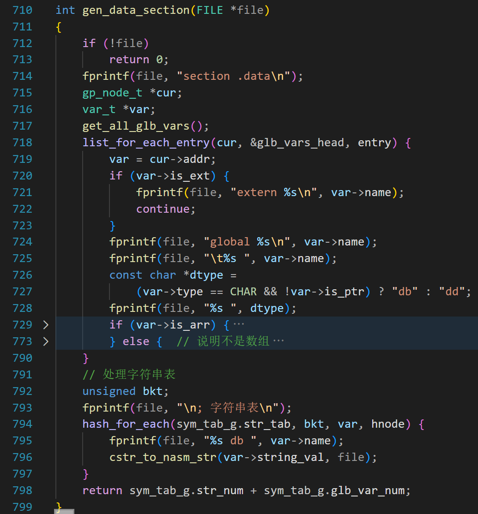
第 714 行，输出 “section .data”；声明这是数据段。
第 717 行，统计所有全局变量，把全局变量收集到 glb_vars_head 链表。
第 718 行，遍历链表，如果是 extern，那就输出 extern xxx;如果是本文件定义的，就输出 global xxx
对于没有初始化值的全局变量，我们直接给它赋值 0，所以 728 行，先根据类型输出 db 或者 dd
然后就是折叠的部分，先不讲。
我们看第 793 行，处理字符串表，先输出注释 “; 字符串表”
然后是字符串的名字，再然后是 db, 再然后就是 cstr_to_nasm_str 函数。cstr_to_nasm_str 函数的伪代码已经讲了，这里跳过。
现在我们集中精力看折叠的部分。折叠的部分用 if-else 分成两种情况，数组和非数组。
数组又分成三种情况。
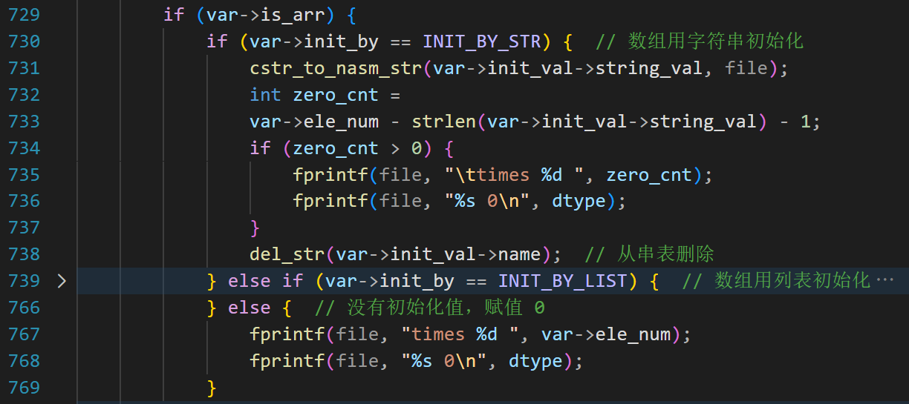
用字符串初始化、用列表初始化、没有初始化。
如果用字符串初始化，那就先调用 cstr_to_nasm_str 函数输出字符串。这还没有完，因为我们允许数组元素个数大于字符串的长度，此时需要补齐后面的零。
int zero_cnt = var->ele_num - strlen(var->init_val->string_val) - 1;
这句代码是求 0 的个数，用数组元素的个数减去字符串的长度，再减去1是因为末尾还有一个零，这个零是 cstr_to_nasm_str 函数加的。
剩下就好办了，第735~736，输出 times xx 0
第 738 行，删除字符串，是因为已经生成了数组初始化的代码，这个字符串就没有用了。
第 767~768 是针对没有初始化的情况，我们强制赋值为 0
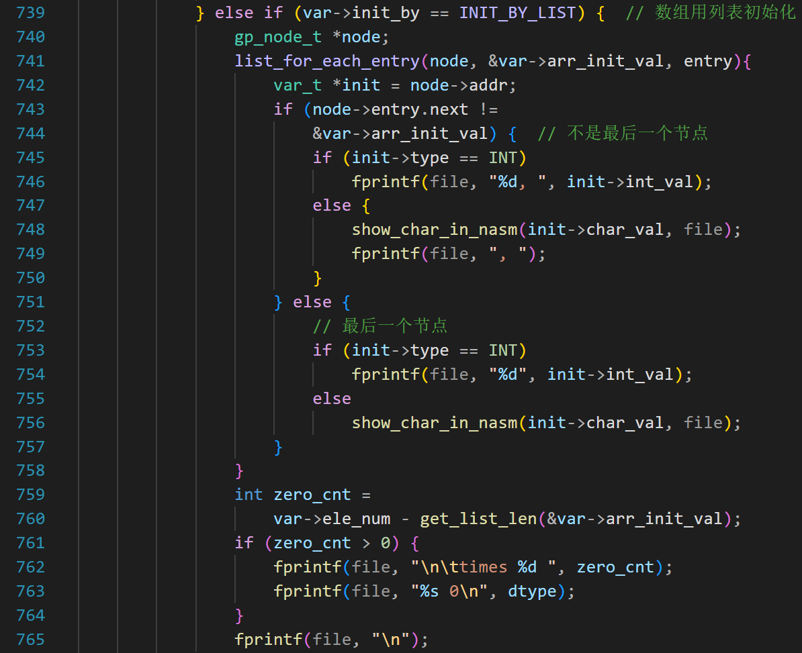
第 739~765 是用列表初始化的情况。列表的每个值已经保存到了 arr_init_val 这个链表中。
第 741 行遍历链表，取出每个值，根据值的类型，分为整型和字符型，如果是前者，则以 ASCII 码的形式输出（第 746 行）
如果是字符型，调用 show_char_in_nasm 输出。
如果不是最后一个节点，还需要输出一个逗号（第 749 行）
第 759 行，同样要补齐后面的零。
数组说完了，下面说非数组的初始化。
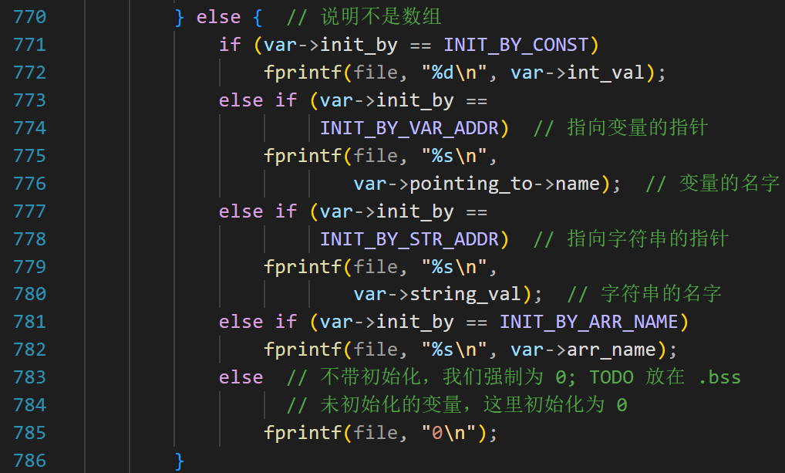
继续举例子。
1 | |
这段代码生成的汇编如下
1 | |
最简单的情况如 “int monkey = 3;” 直接输出初始化值，汇编代码第 3 行。
如果是指向变量的指针，如 int *p_monkey = &monkey; 那应该输出所指向变量的名字，如汇编代码第 5 行。
如果是指向字符串的指针，如 char *pstr = “Hello”; 应该输出字符串的名字，如汇编代码第 7 行，
如果是用数组名初始化的指针，如 int *plist = list; 应该输出数组名，如汇编代码第 9 行。
如果不带有初始化，输出 0 就可以。
如何测试
到目前为止，我们的编译器仅实现了把 .c 翻译为.asm,如何验证汇编代码的正确性呢？
我们可以借助汇编器 nasm 和 gcc;
首先，我们要准备好要测试的代码，例如
1 | |
这个 test.c， 就是 csub 要编译的文件；它要实现的就是对一个全局数组做排序，并调用 print_int_arr 函数打印结果。
然后，我们准备一个 gcc_main.c
1 | |
此文件的作用有 2 个：
1、实现 print_int_arr 函数，用来打印数组，供 test.c 调用
2、调用 test.c 里面的 test() 函数。
我们写一个简单的 Makefile
1 | |
第 5 行的 test.asm 是 cusb 根据 test.c 生成的 test.asm
我们用 nasm 把它汇编为 test.o
-g 是生成调试信息， -f elf32 是指定 .o 的输出格式为 32 位 ELF 目标文件
第 8 行，用 gcc 把 gcc_main.c 编译为 main.o, -c 的意思是只编译，不链接；-m32 是指生成 32 位的代码。
第 2 行，用 gcc 链接 test.o 和 main.o，生成最后的可执行文件 test;
如果不加 -no-pie
则可能输出
1 | |
这是因为，我们生成的汇编代码不是位置无关代码，需要重定位。
第一行，链接器发现我们的 .text 段中包含需要重定位（relocation）的地址引用。
第二行，为了重定位，链接器被迫在最终的 ELF 文件中添加一个 DT_TEXTREL 标记。
如果加了 -no-pie，就可以禁用 PIE，上面的警告也没有了。
什么是 PIE？
- PIE 是一种编译/链接技术，让可执行文件像共享库（
.so）一样，可以在内存中的任意地址加载运行。 - 它是现代 Linux 系统实现 ASLR（Address Space Layout Randomization，地址空间布局随机化） 的关键机制。
- 启用 PIE 后，每次运行程序时，其代码段（
.text）、数据段等的基地址都会随机变化。
禁用 PIE（Position-Independent Executable，位置无关可执行文件）意味着生成一个传统的、具有固定加载地址的可执行程序。这对于初学编译和链接原理的同学挺友好。
执行 make 后，就会生成一个 32 位的可执行程序，运行结果：
1 | |
说明我们生成的汇编代码基本没有问题。
生成的 .asm 文件如下（仅截取一小部分）
1 | |
可以看到，生成的中间指令作为注释插了进来
另外，第 10 行后面的注释，表示 ebp+8 处存的变量是 a;（冒号左边是变量的名字，冒号右边是变量的注释，有些情况下，名字和注释一样，所以会看到两个 a）
第 12 行的注释，表示 ebp-4 处存的变量是 tmp
本文到这里就结束了。下来我们要乘胜追击，把汇编文件翻译为二进制。